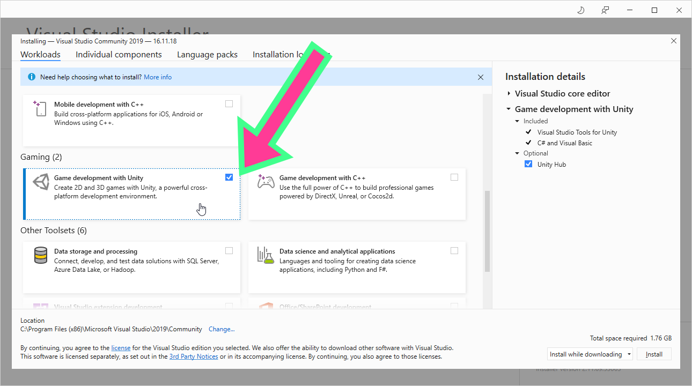
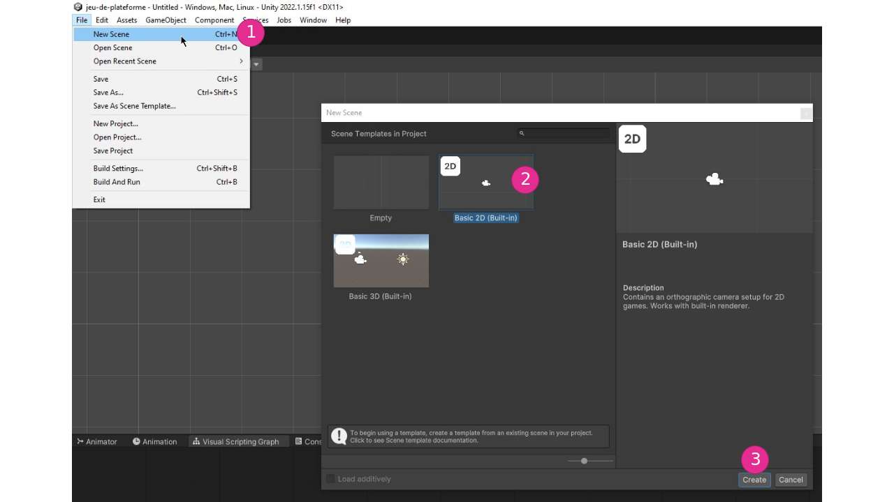
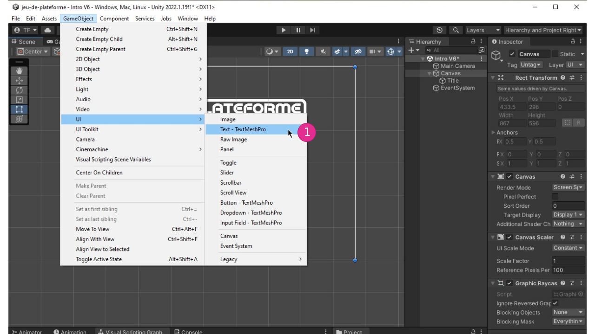
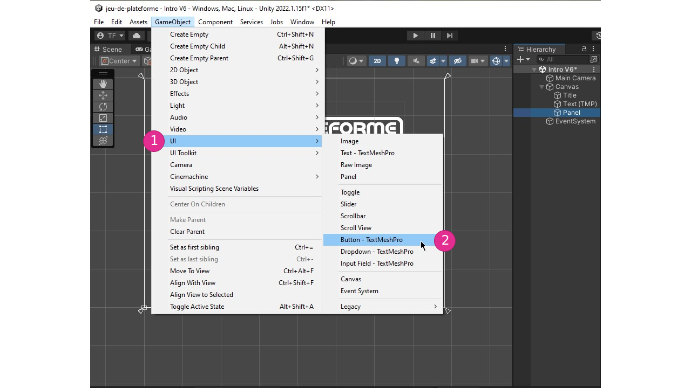
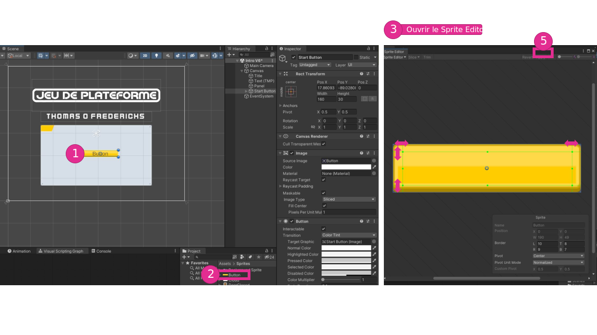

Créez un compte sur Unity.com
Téléchargez Unity Hub du site Web
Rendez-vous à la page https://unity.com/fr/download pour télécharger Unity Hub.
Installation de Unity Engine
Ouvrez Unity Hub et installez Unity Editor 2021
Si Unity Hub ne vous propose pas l'installation de Unity Editor à l'ouverture, vous devez installer Unity Editor manuellement.


Installation de Visual Studio
Le démarrage de Visual Studio devrait commencer immédiatement après l'installation de Unity Engine.

Installation du paquet de support pour Unity

Connectez vous à votre compte Microsoft ou scolaire

Après l'installation, n'ouvrez pas de projet et fermez toutes les fenêtres de Visual Studio
Modifier une installation d'Unity Engine
Si lors de l'installation de Unity Editor vous avez oublié d'installer des options ou des paquets (comme Visual Studio Community), vous pouvez la modifier en cliquant sur engrenage.
Activation de licence
Se connecter à son compte Unity

Ouvrir le menu du compte

Ajouter une licence
Démarrer un projet 2D
En vidéo
Démarrer un projet Unity 2021 - YouTube
En captures d'écran pour Unity 2021.3


Animer et désactiver un objet ramassé


Compter nombre d'objets ramassés

Double saut


Rendre le personnage invincible temporairement


Désactiver le code du personnage lorsque le joueur perd


Désactiver des éléments lorsque le joueur perd


Particules en 2D


Écran titre
Nouvelle scène, nouveau Canvas et nouveau Input Sytem



Ajoutez une image


Ajoutez un texte TextMeshPro



Ajoutez un Panel


Ajoutez un bouton



Ajoutez le code des boutons et ordonnez les scènes


Menu qui s'affiche lorsque le joueur perd


Afficher la valeur d'une variable


Détecter lorsque le personnage entre en Trigger avec la porte


Exporter un projet


Démarrer un projet HDRP
Vidéos
- CRÉER UN PROJET HDRP - YouTube
- NAVIGUER DANS UNE SCÈNE 3D - YouTube
- CRÉER UNE SCÈNE HDRP - YouTube
- CONFIGURER UN VOLUME - YouTube
GitHub
Introduction au casque Quest
Modes de jeu Guardian
Votre sécurité physique est importante lorsque vous utilisez votre casque Oculus. C’est pourquoi vous devez configurer une limite Guardian. Les modes de jeu Guardian indiquent la taille de la zone de jeu requise pour l’expérience et le degré de mouvement physique nécessaire au jeu.
Guardian Roomscale

Guardian Roomscale permet de définir une limite virtuelle qui vous aidera à rester dans une zone de jeu dégagée. Elle apparaîtra dans votre expérience VR si vous vous approchez trop près du bord de la zone de jeu définie.

Lorsque vous configurez votre limite Guardian, laissez de l’espace entre les murs et votre zone de jeu et autour des objets. Gardez à l’esprit que Guardian n’est pas en mesure de détecter des gens ou des animaux qui entrent dans votre zone de jeu; choisissez donc une zone que vous pouvez maintenir dégagée, même lorsque vous portez le casque.
Guardian stationnaire
Le mode stationnaire peut être utilisé pour les zones de jeu plus réduites où votre corps ne se déplcara pas beaucoup dans l'espace. Nous vous recommandons d’utiliser une limite Guardian stationnaire pour les modes de jeu assis et debout.
Santé et sécurité
Dégagez toujours la zone de jeu avant d’enfiler votre casque. Vérifiez tout obstacle que vous seriez susceptible de heurter même les bras ouverts. Lorsque vous configurez votre limite Guardian, laissez de l’espace entre les murs et votre zone de jeu et autour des objets. Gardez à l’esprit que Guardian n’est pas en mesure de détecter des gens ou des animaux qui entrent dans votre zone de jeu; choisissez donc une zone que vous pouvez maintenir dégagée, même lorsque vous portez le casque

Mise en mirroir: «casting»
https://support.oculus.com/articles/in-vr-experiences/oculus-features/cast-with-quest-2/
«Link»


Ajouter XR à un projet HDRP
Particules en HDRP
Vidéos
- INITIALISER UN SYSTÈME DE PARTICULES - YouTube
- CRÉER LE BON MATÉRIEL HDRP POUR LE SYSTÈME DE PARTICULES - YouTube
- MODIFIER LE SHADER GRAPH DU MATÉRIEL HDRP POUR LE SYSTÈME DE PARTICULES - YouTube
- Explorer les systèmes de particules - YouTube
- Exemples de VFX (systèmes de particules version 2) - YouTube